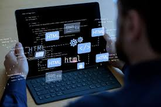
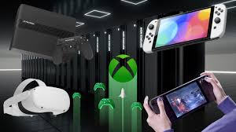
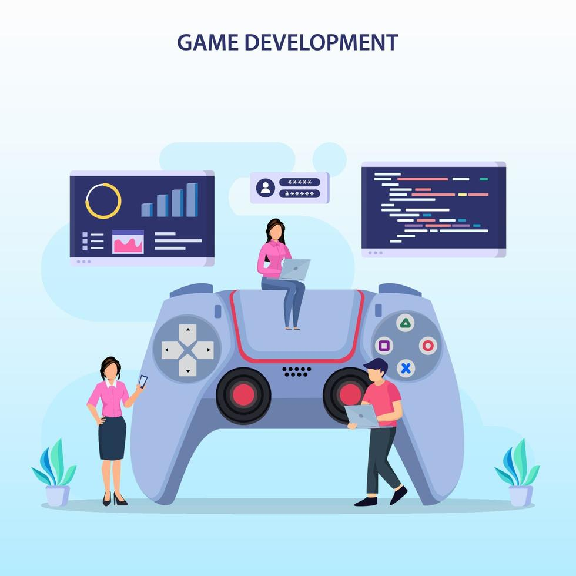

En la era digital actual, el desarrollo de videojuegos ha dejado de ser exclusivo de grandes estudios gracias al auge de tecnologías abiertas. Estas herramientas de código abierto (open-source) han revolucionado la industria al proporcionar acceso libre a motores gráficos, bibliotecas de programación y recursos compartidos. Este ensayo examina el ecosistema de tecnología abierta para implementar videojuegos, analizando sus componentes clave, ventajas, desafíos y casos de éxito que demuestran su potencial para democratizar la creación de experiencias interactivas.




La tecnología abierta ha creado un paradigma democratizador en el desarrollo de videojuegos, eliminando barreras económicas y fomentando la innovación colaborativa. Si bien presenta desafíos técnicos, su flexibilidad y transparencia la convierten en opción ideal para proyectos educativos, experimentales y comunitarios. A medida que maduran herramientas como Godot y se integran nuevas tecnologías (IA, Web3), el ecosistema open-source está posicionado para redefinir el futuro del desarrollo interactivo, haciendo realidad la visión de una industria de juegos verdaderamente accesible y diversa.